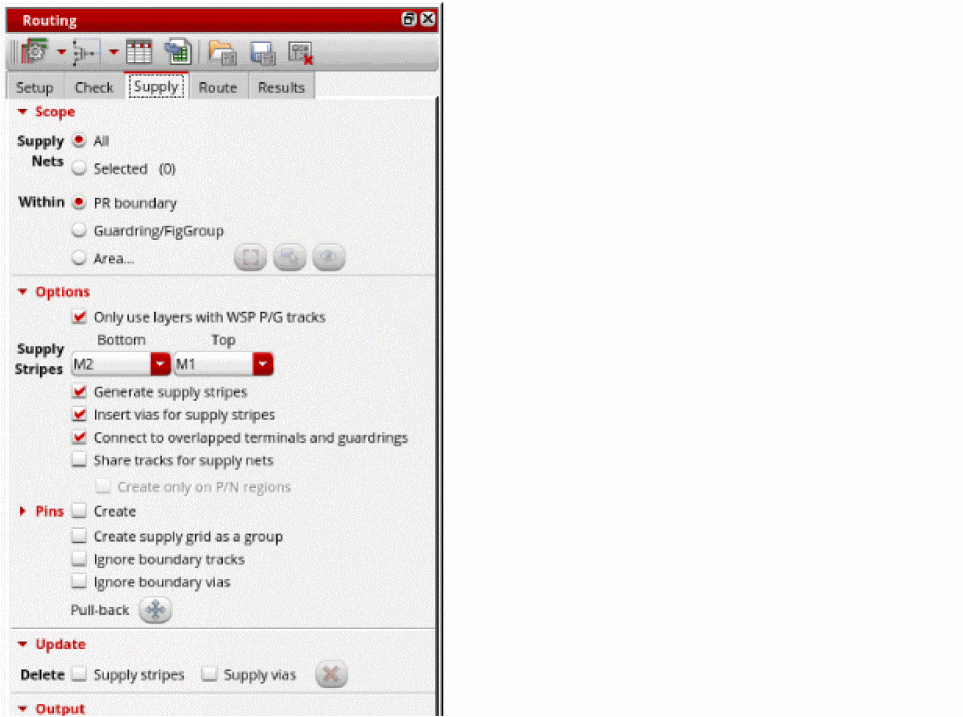
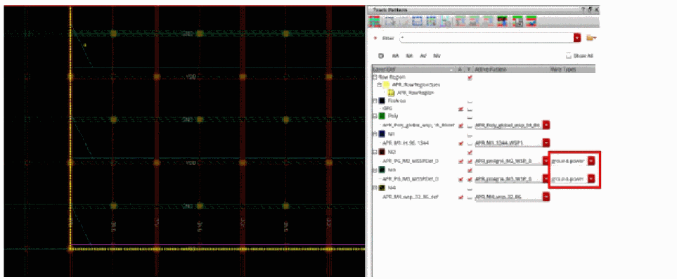

Generating a Supply Grid
In certain device-level libraries, boundary cells have blockages. In such cases, the flow must be modified to not use rails in the row region and to place boundary cells before routing the design. Generally a supply grid should be created before device-level placement so that the placement can prevent routing from interfering with access to device-level pins.
- Open a design in Layout MXL.
-
Choose Window – Assistants – Routing.
Alternatively, right-click anywhere on the layout window menu bar and choose Assistants – Routing.
The Routing assistant appears. -
Choose the Supply tab.
 - Click Selected to define the scope of supply nets to route. You can also choose to route All supply nets.
- Select Area under Within to generate supply grid in a user-defined area. You can select PR boundary to generate supply grid in the entire PR Boundary or select Guardring/FigGroup to generate supply grid inside the user selected FigGroup or Guradring group.
- If Area is selected, click Draw the area bbox to draw the area for the supply grid.
- Select Only use layers with WSP P/G tracks if you want to restricts supply routing to layers with existing power or ground tracks.
-
Select the bottom and top layers for supply stripes from the Supply Stripes Bottom and Top drop-down lists. The layers are auto filled based on the pattern entered during WSP generation and if there are PG tracks assigned to the layers.
This generates stripes only on tracks with power and ground wireTypes that are assigned to nets that havesigTypesof supply and ground. -
Ensure that the following options are selected.
- Generate supply stripes to generate the horizontal and vertical stripes on the selected layers,
- Insert vias for supply stripes to insert vias in the supply grid created.
- Connect to overlapped terminals and guardrings to connect the supply grid to any instance terminals and guarding that are overlapping the supply grid.
- Select Share tracks for supply nets for supply nets to share power ground tracks as needed in the appropriate P and N regions.
-
Select Create next to the Pins option to generate pins instead of path segs.
You can expand the Pins option to find options for creating labels against the pins, create pins instead of pathSegs for all supply layers or selected supply layers and to create pins on ends of the pathSegs only. - Select Create Supply Grid as a group to create the supply grid as a figGroup.
- Select Ignore boundary tracks and Ignore boundary Vias to avoid creating tracks and vias overlapping the PR Boundary edge.
- Click Run power route at the lower-right corner of the Supply tab.
- Once supply grid generation is complete as indicated by the progress bar, remove the drawn area by clicking show/hide the area bbox next to the Draw button.
-
Select the power and ground nets in the Navigator assistant to see the supply grid on the selected layers.
-
To clearly visualize the supply grid, select the power and ground wire type from the Wire Types drop down next to the metal layers in the Track Pattern assistant.”
You can zoom into the layout to see that the supply grid follows the supply (power and ground) wire types and skips tracks that are not assigned a supply wire type.
Related Topics
Generating Width Spacing Patterns for Device-level Routing
Configuring Device-Level Router Settings
Checking Layout Routability after Generating Grids and Running Device Placer
Return to top